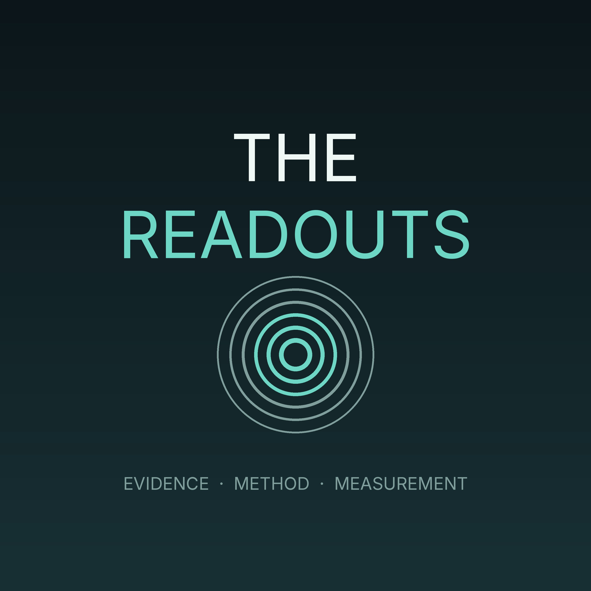

The Readouts
The Readouts
Three things every episode: what the health literature actually published this month and whether it holds up, the reasoning underneath one part of a training and nutrition plan, and a plain reading of one set of real numbers — sleep, recovery, training load, adherence — including the weeks they go the wrong way. Evidence and measurements, not advice. Anything that needs a clinician is named as such.
Subscribe
Paste this into Overcast, Pocket Casts, or any podcast app:
https://adil1248.github.io/ptji05aktzjpmkcu9r/feed.xml
Episodes
- 2026-09-02 — Episode 2 — 2026-09-02 (corrected) (24 min)
- 2026-08-31 — Episode 1 — 2026-08-31 (12 min)